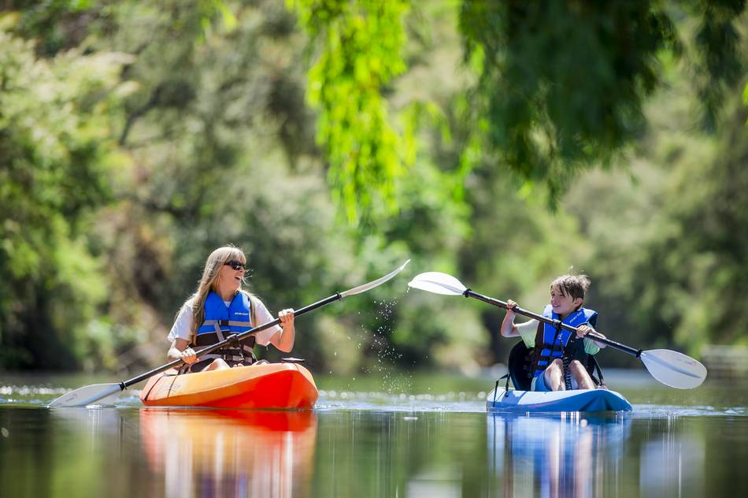

Our 200 metres of the Ovens is as good for a fishing rod or a kayak as it is for a swim. Walk down the lawn, cast a line or push off, and you're on the river.
Fishing
The Victorian Fisheries Authority rates the Ovens between Bright and Myrtleford for its brown trout, with some rainbow trout and native Murray cod and trout cod as well. Trout cod are fully protected, so if you catch one, put it straight back.
Trout season on rivers and streams usually opens in early September and closes in early June. Check the exact dates each year. You'll need a Victorian recreational fishing licence unless you're exempt, for example if you're under 18 or 70 and over. You can buy one online in a few minutes.

Paddling
Bring your own kayak, canoe or paddleboard and launch from the lawn. Summer is the time for it, when the river is lower, warmer and gentle. The early morning is when you're most likely to share the water with a platypus.
If you'd rather hire, there are kayak and paddleboard hire businesses in the area. Ask us when you book and we'll point you to one.